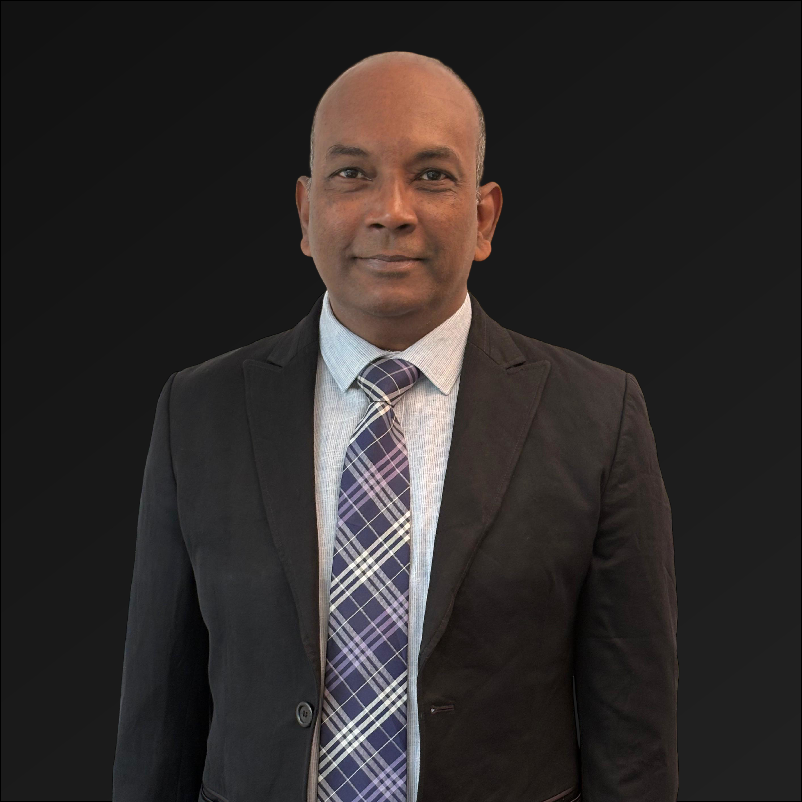

The Chief Business Officer & The Chief Security Officer
As the Chief Business Officer (CBO) and Chief Security Officer (CSO) of NeuroPi, I bring a wealth of experience that spans over 33 years in the Indian Army, as well as 5 years in the fields of STEM education, entrepreneurship, and strategic advisory roles. My career journey has been marked by a deep commitment to discipline, strategic decision-making, leadership, and innovation. With NeuroPi, my focus is to drive business growth and ensure the highest standards of security, both for our cutting-edge technology and for our valuable user data.
Having served in key roles within the Indian Army, I developed expertise in managing large teams, complex operations, and high-stakes environments. My transition into the world of STEM education, entrepreneurship, and strategic advisory allowed me to apply my military leadership experience in education technology and innovation — particularly in personalized learning and human performance optimization. This unique blend of military discipline and technological insight makes me uniquely suited to lead NeuroPi through its growth and operational challenges.
Military Leadership & Operations (33 Years): Extensive leadership experience in the Indian Army, where I honed skills in strategic planning, high-pressure decision-making, and leading diverse teams to achieve critical missions. I played an integral role in national security, operational coordination, and leadership development, shaping my approach to both business strategy and human performance optimization. Some of my important achievements have been the investigative analysis on internal and external ballistics of Tank T-72 and T-90 and the occurrence of accidents. I led Ministry of Defence investigative teams to Russia and other countries, consisting of scientists and officers from the ARMY, DRDO, DGQA, CPE, PXE, OFB, and DMRL, on scientific fact-finding missions to enhance weapon reliability and transfer of Technology I have been instrumental in designing the digital control harnesses for Tank T-72 and Tank T-90 which are presently in use in all ground-based fighting vehicles of the Armed Forces.
Following my military service, I transitioned to STEM education, where I advised on curriculum development and the integration of cutting-edge technologies for personalized learning. I have been a Director and Professor in the Defence Institute of Armament and Technology, Pune University (MILIT). I am the state convener for overseeing AICTE initiatives in Telangana Colleges in India. I am also a Defence Consultant with the DRDO and Army and a Consultant (subject matter expert for arms and ammunition manufacture) with one of India's leading Public Sector Undertakings (a MAHARATNA).
As an entrepreneur, I’ve founded and scaled multiple ventures at the intersection of education, technology, and human performance, driving business strategy, growth, and operational execution. I am a Director in two successful companies in Hyderabad. My focus is on ensuring that NeuroPi continues to expand its impact globally, with strategic growth in healthcare, education, and performance sectors.
As CSO, I oversee the security protocols for NeuroPi, ensuring the protection of sensitive user data and operational continuity. My military background in risk management and national security and my knowledge in advanced cyber security and cryptology translate into a comprehensive, proactive approach to cybersecurity, data integrity, and compliance.
Throughout my distinguished career, I have received numerous prestigious awards, including: